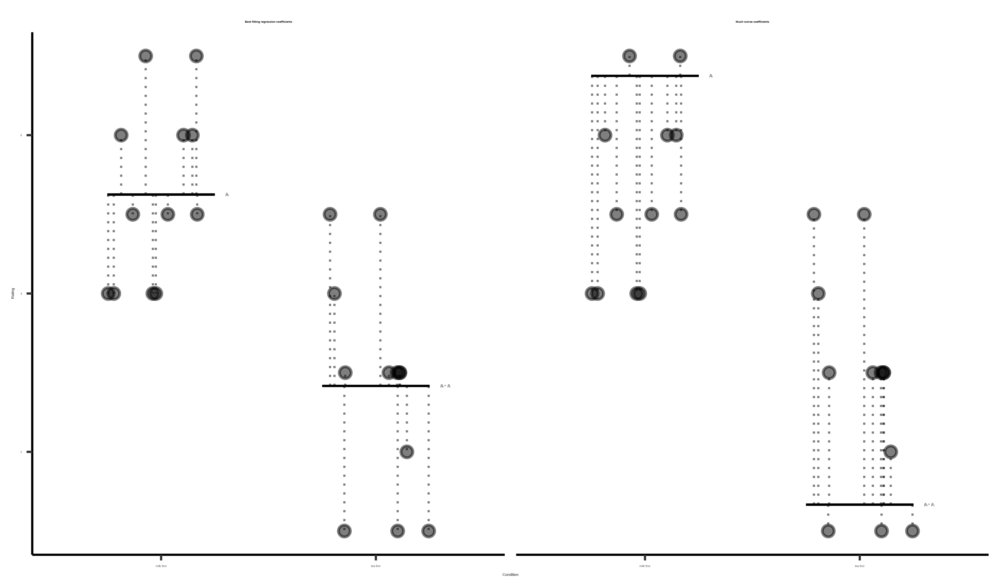
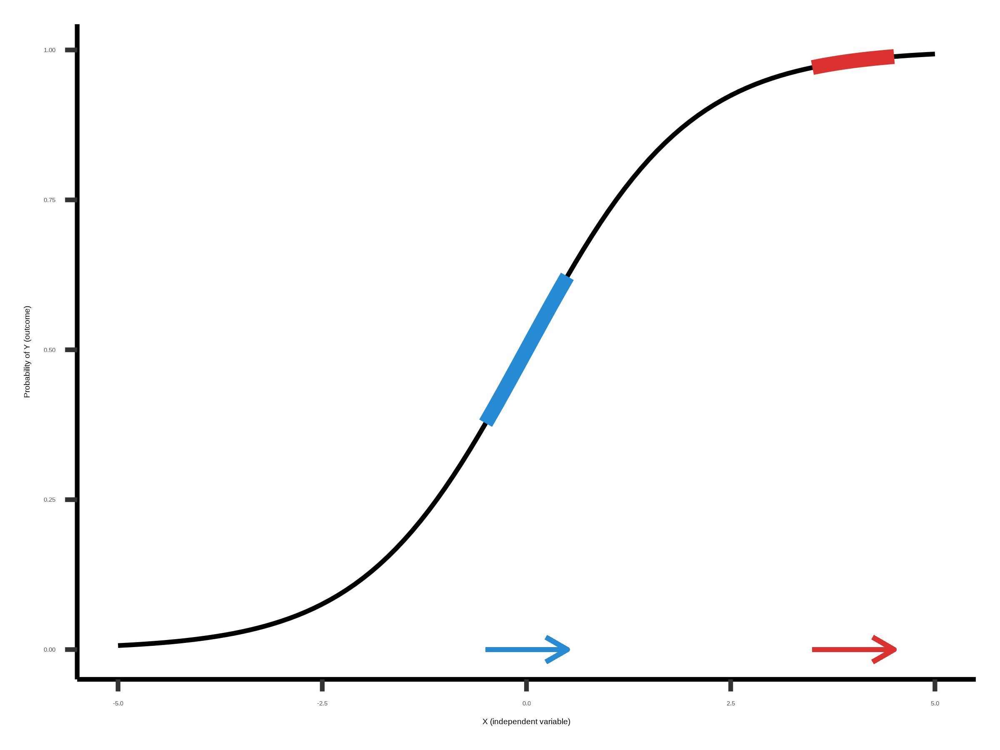
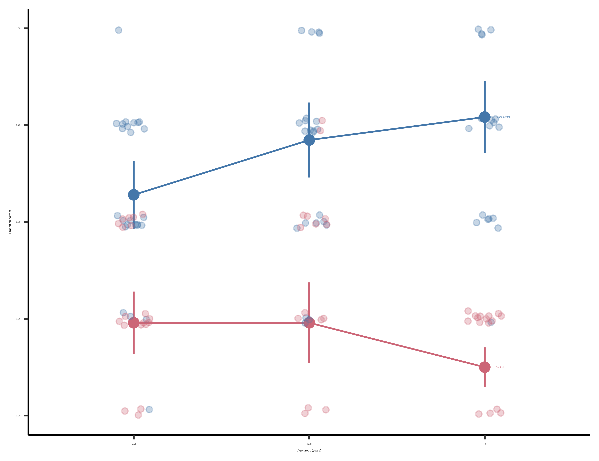
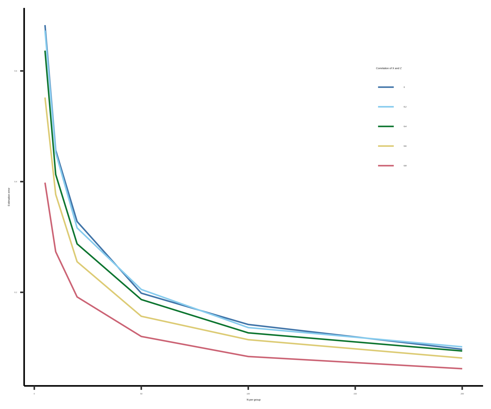

7 模型
注记学习目标
- 说明如何使用统计模型估计实验效应
- 建立关于经典统计检验如何对应到 linear regression models 的直觉
- 探索 linear model 的变体，包括 generalized linear models 和 mixed effects models
- 推理 model specification 中的权衡与策略，包括 control variables 的使用
在前两章中，我们介绍了围绕实验效应估计，以及关于这个效应与 population 中效应之间关系的推断概念。那里介绍的工具适用于相当具体的研究问题，因此适用范围有限。一旦你走出“两条件实验、每名参与者贡献一个来自连续测量的数据点”的世界，简单的 \(t\)-test 就不够用了。
在一些统计学教材中，下一步会是呈现一大堆为其他特殊情况设计的统计检验。我们甚至可以展示一个决策树：你有 repeated measures？ 用 Test X！或者有 categorical data？用 Test Y！或者有三个 conditions？用 Test Z！但这不是一本统计学书；而且即使它是，我们也不主张这种方法。为你的情境寻找某个狭窄定制的具体检验，是上一章我们试图劝你远离的二分式 NHST 方法的一部分。如果你想要的只是 \(p<0.05\)，那么去查找一个能在你的具体案例中计算 \(p\)-value 的检验是合理的。但我们更喜欢一种更聚焦于准确估计（因果）效应大小的方法。
在本章中，我们开始探索如何选择合适的 statistical model，以清晰且灵活地推理这些效应。统计模型是一种写下关于特定数据如何生成的一组假设的方式，也就是 data generating process。统计模型是从经验数据中估计感兴趣的特定 parameters 的基础工具——例如，与实验操纵相关的因果效应大小。它们也可以量化 measurement precision。
例如，假设你看着某人抛硬币，并观察到一串正面和反面。一个简单统计模型可能假定，观察到的数据是由一枚有权重的硬币抛掷生成的。从前两章的视角看，我们可以为估计出的正面比例估计 standard error（例如，八次抛掷中有六次正面，我们有 \(\hat{p}= 0.75 \pm 0.17\)），也可以把观察到的比例与 null hypothesis 比较。然而，从 model-based perspective 看，我们会先思考数据从哪里来：我们可能假定被抛的硬币有某种权重（data generating process 中一个 latent、即不可观察的 parameter），而我们的目标是在给定观察数据的情况下确定这个权重最可能的值。这个单一的统一模型随后也可以用来推断硬币权重是否不同于某个 null model（也许是一枚公平硬币），或者预测未来的抛掷。
这个例子听起来很像上一章谈到的简单 inferential tests；并不很“model-y”。但当需要估计多个 parameters 时，事情会变得更有意思，而这正是许多真实世界实验的情况。在过去两章反复使用的茶品尝情境中，一个真实实验可能让多人以不同顺序品尝不同类型的茶，同时随机把一些杯子分派为 milk-first 或 tea-first。本章我们要学会做的是，为这种情境建立一个模型，使我们能够推理 milk-order effect 的大小，同时估计由不同人、顺序和茶类型导致的变异。这就是使用模型的优势：一旦你能够用 model-based terms 推理 estimation 和 inference，就不再受长长的决策树限制，而能够灵活做出适合数据的假设。1
1 这里我们不会探索它与 DAGs 和 Bayesian models 的联系，但理解这种 model building 的一种方式，是把它看作在创建实验的因果理论。McElreath (2018) 倡导的这种方法，把我们在 chapters 1 和 2 中呈现的 theory 想法，与这里关于 models 的想法有力连接起来。如果这听起来很吸引你，我们鼓励你跳进这个 rabbit hole！
2 Regression 这个名称最初来自 Galton 的 (1877) 遗传研究。他关注的是父母身高与子女身高之间的关系。他发现子女身高会 regress，并通过创建一个 regression model 来做到这一点。现在我们用 “regression” 指代这种形式的任何模型。
我们会先讨论构建统计模型中无处不在的框架：linear regression。2 随后，我们会建立 regression 与 \(t\)-test 之间的联系。本节会讨论如何向 regression models 添加 covariates，以及 linear regression 什么时候有效、什么时候无效。在下一节中，我们会讨论 generalized linear model，这是一项创新，使我们能够为更广泛的数据类型建立模型，包括 logistic regression。随后，我们会简要介绍 mixed models，它们让我们能够对数据集中的 clustering 建模（例如来自同一个人或同一个刺激项目的一组 observations）。最后，我们会给出一些带有立场的 model building 实践建议。
如果你有兴趣建立关于统计 model building 的直觉，那么我们建议你从头到尾读完本章。另一方面，如果你已经在做数据分析，并想看一个例子，我们建议你跳到最后一节；在那里我们会给出一些关于 model building 的实践建议，并提供一个拟合 mixed effects model、并在 context 中解释它的 worked example。
7.1 Regression models（回归模型）
统计模型有很多类型，但本章主要聚焦 regression，这是一类广泛而极其灵活的模型。Regression model 把一个 dependent variable 与一个或多个 independent variables 联系起来。Dependent variables 有时叫做 outcome variables，independent variables 有时叫做 predictor variables、covariates 或 features。3 我们会看到，许多常见统计估计量（如样本均值）和推断方法（如 \(t\)-test）实际上都是简单的 regression models。理解这一点会帮助你把许多统计方法看作同一个底层框架的特殊情况，而不是彼此无关的 ad hoc tests。
3 反过来并不成立——不是每个 predictor 或 covariate 都是 independent variable！把 regression models 与 causal hypotheses 联系起来的棘手之处之一是：某个东西出现在 regression equation 右侧，并不意味着它是因果操纵。当然，仅仅因为你在 regression 中得到了某个 predictor 的估计，也不意味着这个估计告诉你因果效应的大小。它可能告诉你，但也可能不是！
7.1.1 用 regression 估计简单 treatment effect
我们从这些特殊情况之一开始，即在 two-group design 中估计 treatment effect \(\beta\)。在 章 5 中，我们已经为茶品尝实验解决了完全相同的挑战。我们应用了一个经典模型，其中 milk-first 评分被假定为服从 normal distribution，均值为 \(\theta_{\text{M}} = \theta_{\text{T}} + \beta\)，标准差为 \(\sigma\)。4
4 这里快速提醒一下，“model” 是在说“关于 data generating procedure 的一组假设”。所以，说某个方程是一个 “model”，就等同于说我们认为数据是从这里来的。我们可以 “turn the crank”——也就是通过这些方程所指定的过程生成数据，例如从均值为 \(\theta_{\text{T}} + \beta\)、标准差为 \(\sigma\) 的 normal distribution 中抽取数字。本质上，我们承诺这样一个想法：这个过程会给出与我们已有数据在实质上相似的数据。
5 使用 0 和 1 被称为 dummy coding，它允许我们把参数解释为 treatment group（tea-first）相对于 baseline（milk-first）的差异。Categorical variables 还有许多其他编码方式，对应不同解释。实践提示：报告任何东西之前，都要小心检查你的变量是如何编码的！
现在我们把这个模型写成 regression model——也就是说，写成一个模型：给定参与者的 treatment assignment \(X_i\)，预测每个参与者的茶评分 \(Y_i\)。\(X_i=0\) 表示 control（milk-first）组，\(X_i=1\) 表示 treatment（tea-first）组。5 这里，\(Y_i\) 是 dependent variable，\(X_i\) 是 independent variable。下标 \(i\) 索引参与者。为了让它具体起来，你可以在下面看到一些茶品尝样本数据（每个 condition 的前三个 observations；表 7.1），其中包含 index \(i\)、condition 及其 predictor \(X_i\)，以及评分 \(Y\)。
我们把这个模型更正式地写成“\(Y\) on \(X\) 的 linear regression”。按照惯例，regression models 会用 \(\beta\) 符号表示所有参数，所以现在我们用 \(\beta_0 = \theta_M\) 表示 milk-first 组均值，用 \(\beta_1 = \theta_T - \theta_M\) 表示 tea-first 和 milk-first 组之间的平均差。这个 \(\beta\) 是我们之前两章和上面用来表示因果效应的那个符号的 generalization。
\[ Y_i = \beta_0 + \beta_1 X_i + \epsilon_i \]
\(\beta_0 + \beta_1 X_i\) 这一项称为 linear predictor，它描述的是给定参与者 treatment group \(X_i\)（该模型中的单个 independent variable）时，个体茶评分 \(Y_i\) 的 expected value。也就是说，对于 control group 中的参与者（\(X_i=0\)），linear predictor 就等于 \(\beta_0\)，这确实是我们上面指定的 control group 均值。另一方面，对于 treatment group 中的参与者，linear predictor 等于 \(\beta_0 + \beta_1\)，也就是我们指定的 treatment group 均值。在 regression jargon 中，\(\beta_0\) 和 \(\beta_1\) 是 regression coefficients，其中 \(\beta_1\) 表示 independent variable \(X\) 与 outcome \(Y\) 的 association。
\(\epsilon_i\) 这一项是 error term，指参与者评分围绕组均值的随机变异。6 注意，这是一种非常具体的 “error”；它不包括例如 bias 导致的 “error”。相反，你可以把 error terms 理解为：只基于 linear predictor 预测任意给定参与者评分时会出现的“误差”。如果你把 control group 参与者的评分预测为 \(\beta_0\)，这是一个不错的猜测——但你仍然预期该参与者的评分会在某种程度上偏离 \(\beta_0\)（也就是由于 treatment groups 没有捕捉到的参与者间变异）。在我们的 regression model 中，linear predictor 和 error terms 合在一起说明，参与者评分会围绕其组均值随机（实际上是 normally）散布，标准差为 \(\sigma\)。这与我们在 章 5 中提出的模型完全相同。7
6 形式上，我们会写成 \(\epsilon_i \sim \mathcal{N}(0, \sigma^2)\)。波浪号表示 “is distributed as”，后面是均值为 \(0\)、方差为 \(\sigma^2\) 的 normal distribution。
7 你可能会想，既然统一框架一直可用，为什么还要费这么大力气为这些特殊情况建立 boutique solutions。部分答案是，统计学的经典基础设施是在计算机广泛普及之前发展起来的，而这些特殊情况之所以被选中，是因为它们容易 “analytically” 处理（也就是用大型数值表中的值手工算出所有数学）。现在我们有了具备更灵活算法的计算机，model-based perspective 比过去更实用、更容易获得。
现在我们有了模型。但我们如何估计 regression coefficients \(\beta_0\) 和 \(\beta_1\)？通常方法叫做 ordinary least squares (OLS)。基本想法如下。对于任意给定 regression coefficient estimates \(\widehat{\beta}_0\) 和 \(\widehat{\beta}_1\)，每名参与者都会得到不同的 predicted values，\(\widehat{Y}_i = \widehat{\beta}_0 + \widehat{\beta}_1 X_i\)。有些 regression coefficient estimates 会比另一些产生更好的预测。Ordinary least squares estimation 旨在找到能优化这些预测的 regression coefficients 值，也就是让预测尽可能接近参与者真实 outcomes \(Y_i\)。
图 7.1 展示了每个 condition 中的茶品尝数据（点），以及每个 condition 的模型预测 \(\beta_0\) 和 \(\beta_0 + \beta_1\)（蓝线）。每个数据点与对应预测之间的距离（也就是 OLS 想要最小化的东西）用虚线显示。8 这些距离是 true errors（\(\epsilon_i\)）的 sample estimates，称为 residuals。左图显示 OLS coefficient values——这些值会把模型预测尽可能移近数据点，也就是最小化虚线总平方长度。右图显示一组明显更差的 coefficient values。
8 Ordinary least squares 最小化 squared error loss，也就是会选择那些让预测最小化 \(\sum_{i=1}^n \left( Y_i - \widehat{Y}_i\right)^2\) 的 regression coefficient estimates，其中 \(n\) 是样本量。OLS 的一个美妙之处在于，这些最优 regression coefficients（一般记作 \(\widehat{\pmb{\beta}}\)）有一个非常简单的 closed-form solution：\(\widehat{\pmb{\beta}} = \left( \mathbf{X}'\mathbf{X} \right)^{-1} \mathbf{X}'\mathbf{y}\)。这里我们使用了更一般的记号，以支持多个 independent variables：\(\widehat{\pmb{\beta}}\) 是一个向量，\(\mathbf{X}\) 是每名 subject 的 independent variables 矩阵，\(\mathbf{y}\) 是参与者 outcomes 的向量。还有一个好消息：\(\widehat{\pmb{\beta}}\) 的 standard error 也有类似简单的 closed form！

你会注意到，本章并没有太多谈 \(p\)-values。Regression models 可以用来为特定 coefficients 产生 \(p\)-values，表示在关于 coefficients 的某个 null hypothesis 下，观察数据 likelihood 的推断。你也可以为特定 regression coefficients 计算 Bayes Factors，或者使用 Bayesian inference 在关于这些 coefficients 分布的某种 prior expectation 下拟合它们。我们不会太多讨论这一点，也不会更一般地讨论如何拟合我们描述的模型。相反，我们想帮助你开始思考如何为自己的数据建模。
注记代码
事实证明，在 R 中拟合 OLS regression model 非常容易。底层函数是 lm()，代表 linear model。你可以用一次函数调用拟合模型，并把一个 “formula” 作为参数。调用如下：
mod <- lm(rating ~ condition, data = tea_data)R 中的 formulas 是 regression equations 的一种特殊简洁记法；你写 outcome、~（distributed as）和 predictors。R 默认假定你想要 intercept，而且还有一些方便的默认设置，使 R formulas 成为指定相对复杂 regression models 的一种简单方式，下面我们会看到。
一旦你拟合了模型并把它赋给一个变量，就可以调用 summary() 查看参数摘要：
summary(mod)你也可以使用 coef(mod) 提取 coefficient values，并使用 broom package (Robinson, Hayes, 和 Couch 2023) 中的 tidy(mod) 把它们放入一个方便的 dataframe。
7.1.2 Adding predictors（加入预测变量）
我们刚才写下的 regression model，与 章 6 中 \(t\)-test 背后的模型相同。但 regression modeling 的美妙之处在于，复杂得多的估计问题也可以写成 regression models，只要扩展上面的模型即可。例如，我们可能想加入另一个 predictor variable，比如参与者年龄。9
9 同时估计多个 coefficients 的能力，是 regression modeling 的巨大优势；以至于人们有时会用 multiple regression 这个标签来表示存在不止一个 predictor + coefficient pair。
让我们把这个新的 independent variable 及对应的 regression coefficient 添加到模型中： \[ Y_i = \beta_0 + \beta_1 X_{i1} + \beta_2 X_{i2} + \epsilon_i \] 现在我们有多个 independent variables，为清楚起见，把它们标记为 \(X_{1}\)（treatment group）和 \(X_{2}\)（age）。
为了说明如何解释这个模型中的 regression coefficients，我们使用 linear predictor 比较两个假想参与者的模型预测茶评分，他们都在 treatment group 中：20 岁的 Alice 和 21 岁的 Bob。Alice 的 linear predictor 告诉我们，她的 expected rating 是 \(\beta_0 + \beta_1 + \beta_2 \cdot 20\)。相比之下，Bob 的 linear predictor 是 \(\beta_0 + \beta_1 + \beta_2 \cdot 21\)。因此，我们可以用 Bob 的 linear predictor 减去 Alice 的 linear predictor，计算 21 岁相对于 20 岁的 expected difference in ratings，结果就是 \(\beta_2\)。
如果 Alice 和 Bob 分别是 50 岁和 51 岁，我们会得到同样结果。这个等价说明了 linear regression models 的一个关键点：
Regression coefficient 表示：比较任意两名在相关 independent variable 上相差 1 个单位、且在模型中其他 independent variables 上没有差异的参与者时，outcome 的 expected difference。
这里，coefficient 比较的是年龄相差一岁的参与者。在 小节 7.4 中，我们讨论是否以及何时要 “control for” 额外变量（也就是何时把它们加入模型）。
7.1.3 Interactions（交互作用）
在我们的贯穿例子中，现在有两个 predictors：condition 和 age。但如果 condition 的效应取决于参与者年龄呢？这种情况会对应于这样一个案例：（比如）年龄较大的人对 tea ordering 更敏感，也许因为他们有更多喝茶经验。我们把这称为 interaction effect： 一个 predictor 的效应取决于另一个 predictor 的状态。
Interaction effects 很容易纳入我们的 modeling framework。我们只需向模型添加一个项，它是 condition（\(X_1\)）和 age（\(X_2\)）的乘积，并用另一个 beta 对这个乘积加权；这个 beta 表示 interaction 的强度： \[ Y_i = \beta_0 + \beta_1 X_{i1} + \beta_2 X_{i2} + \beta_3 X_{i1} X_{i2} + \epsilon_i \] Statistical interactions 是非常强大的 modeling tool，可以帮助我们理解不同实验操纵之间，或操纵与 covariates（如年龄）之间的关系。我们会在 章 9 中更详细讨论它们在 experimental design 中的角色，以及它们带来的一些解释挑战。10
10 这里我们不会深入这个话题，但想指出一个持久挑战：当你用 categorical predictors 指定 regression models 时，尤其是指定它们的 interactions 时，如何对这些 categorical predictors 进行 “code”。上面我们创建了一个 “dummy” 变量 \(X\)，把 milk-first tea 编码为 0，把 tea-first tea 编码为 1。Dummy variables 很容易理解，但在有 interactions 的模型中会造成一些问题。因为我们示例模型中的 interaction 是 dummy-coded condition variable 与 age 的乘积，interaction term \(\beta_3\) 被解释为 tea-first condition（\(X=1\)）中的 age effect，因此 age effect \(\beta_2\) 实际上是 milk-first condition 中的 age effect。处理这个问题的方法是使用不同编码系统，例如 effects coding。Davis (2010) 对这个棘手话题有很好的教程。
7.1.4 Linear regression（线性回归）什么时候有效？
使用 OLS 的 linear regression modeling，是一种极其强大的技术，可以建立模型来估计多个 predictors 对单个 dependent variable 的影响。事实上，从数学意义上说，OLS 是拟合 linear model 的最佳方式！11 但 OLS 只有在满足三个大条件时才“有效”——也就是能够给出好的估计。
11 有一种精确意义是：OLS 给出了我们从任何假设 independent variables 与 outcome 之间存在线性关系的模型中所能得到的最优预测。也就是说，你可以提出任何其他你想要的 linear、unbiased model，但如果 OLS 的假设被满足，OLS 的预测总会比你的模型噪声更小。这是因为一个优雅的数学结果，称为 Gauss-Markov Theorem。
- Predictor 与 outcome 之间的关系必须是线性的。 在我们基于 Alice 和 Bob 的一岁年龄差比较 expected outcomes 时，能够把 coefficient \(\beta_2\) 解释为比较年龄相差一岁的参与者时 \(Y_i\) 的平均差异，无论这些年龄是 20 vs 21 还是 50 vs 51。如果我们认为这种关系是 nonlinear，那么可以变换 predictor——例如通过加入 \(\beta_3 X_2^2\) 项来包含年龄的 quadratic effect。不过，这个新 predictor 与 outcome 之间的关系仍然是线性的。使用 scatter plots 等可视化来寻找 predictor 与 outcome 之间线性关系假设可能存在的问题，始终是个好主意。
- Errors 必须相互独立。 在我们的例子中，regression model 中的 observations（也就是数据集中的行）是独立抽样的：每位参与者被独立招募到研究中，并各自完成一个 trial。另一方面，假设我们有 repeated-measures data，先抽样参与者，然后对每名参与者获得多次测量。在每名参与者内部，测量很可能相关（也许因为参与者在总体上喜欢茶的程度不同）。这种相关会使一个没有容纳这种相关的模型所做推断失效。下面我们会详细讨论这个问题。
- Errors 必须服从 normal distribution，并且与 predictor 无关。 想象年龄较大的人有非常一致的 tea-ordering preferences，而年轻人没有。在这种情况下，模型的 error term 对年龄较大的参与者会比对年轻参与者变异更小。这个问题称为 heteroskedasticity。把每个 independent variable 与 residuals 画出来，看看 residuals 是否在 independent variable 的某些值上比其他值更 variable，是一个好主意。
如果这三个条件中任何一个被违反，都可能削弱你从模型中得出的估计和推断。
7.2 Generalized linear models（广义线性模型）
到目前为止，我们考虑的是连续 outcome measures，例如茶评分。如果我们改用 binary outcome，比如参与者喜欢或不喜欢这杯茶，或者 count outcome，比如参与者选择喝几杯茶，会怎样？这些以及其他非连续 outcomes 常常违反 OLS 的假设，尤其是因为它们经常诱导 heteroskedastic errors。
Binary outcomes 本质上会产生 heteroskedastic errors，因为 binary variable 的方差直接取决于 outcome probability。当 outcome probability 接近 \(0.50\) 时，errors 会更 variable；当概率接近 \(0\) 或 \(1\) 时，errors 的变异会小得多。12 这种 heteroskedasticity 反过来意味着，模型的推断（例如 \(p\)-values）可能不正确，有时只偏一点，有时则会严重错误。13
12 具体来说，一个 outcome 概率为 \(p\) 的 binary variable 的方差就是 \(p(1-p)\)，它在 \(p=0.50\) 时最大。
13 Ordinary least squares 也可以用于 binary outcomes，在这种情况下 coefficients 表示概率差异。不过，通常的 model-based standard errors 会是错的。
幸运的是，generalized linear models（GLMs） 是与 OLS 紧密相关的 regression models，可以处理非连续 outcomes。这些模型称为 “generalized”，因为 OLS 是这一大类模型中的许多成员之一。为了看到这种联系，我们先更一般地写一个 OLS model，用它对 outcome 的 expected value 说什么来表达；我们把它记为 \(E[Y_i]\)： \[ E[Y_i] = \beta_0 + \sum_{j=1}^p \beta_j X_{ij} \] 其中 \(p\) 是 independent variables 的数量，\(\beta_0\) 是 intercept，\(\beta_j\) 是第 \(j^{th}\) 个 independent variable 的 regression coefficient。这个方程只是用数学方式说：你通过把每个 predictor 对 expected outcome 的贡献（\(\beta_j X_{ij}\)）加起来，来从 regression model 做预测。
GLM 的 linear predictor（即 \(\beta_0 + \sum_{j=1}^p \beta_j X_{ij}\)）看起来与 OLS 完全相同，但 GLM 并不是直接建模 \(E[Y_i]\)，而是建模 expectation 的某种 transformation，\(g(.)\)： \[ g( E[Y_i] ) = \beta_0 + \sum_{j=1}^p \beta_j X_{ij} \] GLMs 变换的是 outcome 的 expectation，不是 outcome 本身！也就是说，在 GLMs 中，我们并不是简单地拿数据集中的 outcome variable 做变换，然后拟合 OLS model；而是在拟合一个完全不同的模型，它提出 predictors 与 expected outcomes 之间存在一种根本不同的关系。这种 transformation 称为 link function。换句话说，为了拟合不同类型的 outcomes，我们只需要构建一个标准 linear model，然后通过合适的 link function 变换其输出即可。
也许最常见的 link function 是 logit link，它适用于 binary data。这个 link function 如下，其中 \(w\) 是任意严格位于 \(0\) 和 \(1\) 之间的概率： \[g(w) = \log \left( \frac{w}{1 - w} \right)\] \(w / (1 - w)\) 这一项称为 odds，表示某事件发生的概率除以它不发生的概率。得到的模型称为 logistic regression，形式如下： \[ \text{logit}( E[Y_{it}] ) = \log \left( \frac{ E[Y_i] }{1 - E[Y_i] } \right) = \beta_0 + \sum_{j=1}^p \beta_j X_{ij} \] 对 coefficients 取指数（即 \(e^{\beta}\)）会得到 odds ratios，也就是与相关 predictor variable 增加一个单位相关的 \(Y_i=1\) odds 的乘法式增加。

图 7.2 展示了 logistic regression model 如何把 predictor（\(X\)）变换成一个被限制在 \(0\) 和 \(1\) 之间的 outcome probability。关键的是，虽然 predictor 仍然是线性的，logit link 意味着 \(X\) 中相同的变化，可能导致 \(Y\) 的绝对概率出现不同变化，具体取决于你位于 \(X\) 尺度的什么位置。在这个例子中，如果你处于 predictor range 中间，\(X\) 变化一个单位会导致概率变化 \(0.24\)（蓝色）。在较高值处，变化要小得多（\(0.02\)）。注意，这与上面的 linear regression model 不同；在那里，年龄的相同变化总是导致 preference 的相同变化！
注记代码
在 R 中拟合 GLMs 与拟合标准 LMs 一样容易。你只需要调用 glm() 函数——并指定 link function。 对于上面 binary “liking” judgment 的例子，调用会是：
glm(liked_tea ~ condition, data = tea_data, family = "binomial")family 参数指定所使用的分布类型，其中 binomial 是 logistic link function。
我们这里只是触及 GLMs 的表面。第一，有许多不同 link functions 适合不同 outcome types。第二，GLMs 与 OLS 不仅在 link functions 上不同，也在处理 error terms 的方式上不同。本章更广泛的目标，是向你展示 regression models 是数据的模型。在这个 context 中，GLMs 使用 link functions 来建立能够生成许多不同类型 outcome data 的模型。14
14 我们有时把 linear models 想象成一套可以拼接的 tinker toys，用来堆叠一组 predictors。在这个 context 中，link functions 是一个额外的 “attachment”，可以扣到你的 linear model 上，让它生成不同 response type。
7.3 Linear mixed effects models（线性混合效应模型）
实验数据常常包含每名参与者的多次测量（所谓 repeated measures）。此外，这些测量常常基于一组 stimulus items 样本（于是每个 item 也有多次测量）。这种 clustering 对 OLS models 来说有问题，因为每个 datapoint 的 error terms 并不独立。
Datapoints 的 non-independence 乍看可能是一个小问题，但它会给推断带来深层问题。以我们上面看过的茶品尝数据为例，每个 condition 中有 24 个 observations。如果拟合 OLS model，我们会观察到一个高度显著的 tea-first effect。下面是该 coefficient 的 estimate 和 confidence interval：\(\hat{\beta} = -2.42\), 95% CI \([-3.50, -1.33]\)。基于上一章的讨论，我们似乎有理由拒绝“这个效应是由 sampling variation 导致的”这一 null hypothesis，并把它解释为我们 sampled population 中存在 generalizable tea preference 差异的证据。
但假设我们告诉你，这全部 48 个 observations（每个 condition 中 24 个）都来自一个叫 George 的人。画面就会大不相同。现在我们完全不知道观察到的大效应是否反映 population 中的差异，但我们会非常清楚 George 的 preference 是什么！15 来自 OLS model 的 confidence intervals 和 \(p\)-values 现在会是错的，因为所有 error terms 都高度相关——它们全都反映 George 的 preferences。
我们如何建立能处理 clustered data 的模型？解决这个问题有许多广泛使用的方法，包括 linear mixed effects models、generalized estimating equations 和 clustered standard errors（常用于经济学）。这里我们会展示 linear mixed models 如何解决这个问题；它们是 OLS models 的扩展，并且正在迅速成为心理学许多领域的标准 (Bates 等 2015)。
7.3.1 建模 clusters 中的随机变异
在 linear mixed effects models 中，我们修改 linear predictor 本身，以建模 clusters 之间的差异。不要只是测量 George 的 preferences，假设我们修改原始茶品尝实验（不包含 age covariate），从每名参与者那里收集十个评分：五个 milk-first，五个 tea-first。我们用和之前相同的方式定义模型，只有一些小差异： \[ Y_{it} = \beta_0 + \beta_1 X_{it} + \gamma_i + \epsilon_{it} \] 其中 \(Y_{it}\) 是参与者 \(i\) 在 trial \(t\) 中的评分，\(X_{it}\) 是该参与者在 trial \(t\) 中被分派到的 treatment（即 milk-first 或 tea-first）。
如果把这个方程与上面的 OLS 方程比较，你会注意到我们添加了两件事。第一，我们添加了区分 trials 与 participants 的下标。但更重要的是，我们添加了 \(\gamma_i\)，也就是每名参与者各自的 intercept value。我们称之为 random intercept，因为它在参与者之间变动（而参与者是从 population 中随机选择的）。16
16 形式上，我们会把这种随机变异记作 \(\gamma_i \sim N(0, \tau^2)\)——换句话说，参与者的 random intercepts 是从围绕共享 intercept \(\beta_0\)、标准差为 \(\tau\) 的 normal distribution 中抽样得到的。
17 当然，这会是一个很糟糕的实验！理想情况下，我们会在实验设计上游处理这个问题；见 章 9。
Random intercept 意味着我们假定每名参与者都有自己的典型 “baseline” tea rating——有些参与者总体上就是比其他人更喜欢茶——而这些 baseline ratings 在参与者之间服从 normal distribution。因此，ratings 在参与者内部相关，因为 ratings 围绕每名参与者独特的 baseline tea rating 聚集。这个模型更能阻止误导性推断。例如，假设每个 condition 中只有一名参与者（比如 George 提供 24 个 milk-first 评分，Alice 提供 24 个 tea-first 评分）。如果我们发现某个 condition 中评分更高，就能够把这种差异归因于 participant-level variation，而不是 treatment。17
沿着相同逻辑，我们也可以为不同 stimulus items 拟合 random intercepts（例如，如果在不同 trials 中使用不同类型的茶）。我们把参与者建模为具有 normally distributed variation，也可以用同样方式建模 stimulus variation。每个 stimulus item 都被假定产生一个特定 average outcome（也就是某些茶比其他茶更好喝），这些 average outcomes 则从一个 normal distribution population 中抽样。
注记代码
值得注意的是，linear mixed effects models 在 R 中并不比标准 linear models 难指定多少。一个非常流行的 package 是 lme4 (Bates 等 2015)，它提供 lmer() 和 glmer() 函数（后者用于 generalized linear mixed effects models ）。对于这里的例子，我们会写：
library(lme4)
lmer(rating ~ condition + (1 | id), data = tea_data)在这个模型中，语法 (1 | id) 指定我们想为 id 的每个水平拟合一个 random intercept。
7.3.2 Random slopes 与 mixed effects models 的挑战
Linear mixed effects models 可以进一步扩展，用来建模 independent variables 的效应在 subjects 内部的 clustering，而不仅仅是平均 outcomes 在 subjects 内部的 clustering。为此，我们可以向模型引入 random slopes（\(\delta_i\)），它们与 condition variable \(X\) 相乘，表示参与者之间在 tea tasting 效应上的差异： \[ Y_i = \beta_0 + \beta_1 X_{it} + \gamma_i + \delta_{i} X_{it} + \epsilon_{it} \] 就像 random intercepts 一样，这些 random slopes 会被假定为在参与者之间变动，并遵循 normal distribution。18
18 这些 random slopes 和 intercepts 可以被假定为彼此独立，也可以假定为相关，取决于 modeler 的偏好。
19 关于 mixed effects models 的最佳 random effect structure，文献中有很多争论。这是一个非常棘手且技术性很强的主题。简言之，有些人主张所谓 maximal models，即包含所有由设计正当化的 random effect (Barr 等 2013)。在这里，这意味着为每名参与者包含 random slopes。问题是，这些模型可能变得非常复杂，而且用标准软件很难拟合。我们不会对这个话题表态，但当你开始在更复杂 experimental designs 上使用这些模型时，值得读一读相关内容。
这个模型现在描述了两种随机变异：一个人总体上有多喜欢茶，以及他们的 ordering preference 有多强。这两者在 population 中都很可能会变动，因此把它们放入模型看起来是好事。事实上，在某些情况下，有人认为添加 random slopes 对做出合适推断非常重要。19
另一方面，这个模型复杂得多。上面的简单 OLS model 中，我们只有两个 parameters 要拟合（\(\beta_0\) 和 \(\beta_1\)），但现在除了这两个之外，还有两个表示 individual participant intercepts 和 slopes 的标准差的 parameters，还包括每名参与者的 parameters 和每名参与者的 condition effect。因此，我们从两个 parameters 增加到了 24 个！20 这种复杂性可能导致模型拟合问题，尤其是在非常小的数据集中（这些 parameters 没有受到数据充分约束）或非常大的数据集中（计算所有这些 parameters 可能很棘手）。21
20 不过需要说明，由于 mixed effects model 的结构，这些 parameters 在技术上并不都是彼此独立的。
21 许多 R 用户可能熟悉广泛使用的 lme4 package (Bates 等 2015)，它使用与 maximum likelihood 相关的 frequentist tools 拟合 mixed effects models。这类模型也可以使用 brms package (Bürkner 2021) 通过 Bayesian inference 拟合；该 package 提供了许多指定复杂模型的强大方法。
注记代码
在 lme4 package 中指定 random slopes 也相对直接：
lmer(rating ~ condition + (condition | id), data = tea_data)这里，(condition | id) 表示“应为 id 的每个水平拟合一个单独的 condition random slope”。当然，指定这样的模型比正确拟合它容易。
更一般地说，linear mixed effects models 非常灵活，并且已经在心理学中相当常见。但它们确实有显著局限。正如我们讨论过的，它们在标准软件包中可能很难拟合。此外，这些模型的准确性依赖于我们能否正确指定 random effects 的结构。22 如果我们指定了错误模型，我们的推断就会错！但有时很难知道如何检查模型是否合理，尤其是在 clusters 或 observations 数量较少时。
22 一种尤其有问题的情况是 errors 的 correlation structure 被错误指定，例如，如果 treatment group 中参与者内部 observations 的相关高于 control group；在这类情况下，mixed model estimates 可能有显著 bias (Bie 等 2021)。
7.4 如何使用模型分析数据？
在本章前面的部分，我们描述了一组 regression-based techniques——标准 OLS、generalized linear model 和 linear mixed effects models——它们可以用于建模随机化实验产生的数据（以及许多其他类型的数据）。相比前两章描述的更简单 estimation 和 inference 方法，regression models 的优势在于，它们可以更有效地考虑多种不同类型的变异，包括 covariates、多个 manipulations 和 clustered structure。此外，当它们被恰当地用于分析设计良好的随机化实验时，regression models 可以给出我们感兴趣的因果效应的无偏估计，而这正是我们做实验的主要目标。
但——从实践角度说——你应该如何为自己的实验建立模型？应该包含哪些 covariates，又应该排除哪些？使用模型探索数据集有很多方式，但在本节中，我们会尝试勾勒一个默认方法，用模型以最直接方式估计实验中的因果效应。把它看作一个起点。我们会先给出一组 rules of thumb，然后讨论一个 worked example。最后几个小节会处理两个问题：什么时候应在模型中包含 covariates，以及如何检查你的结果是否在多种不同 model specifications 下 robust。
注记深入
另一种方法：Generalized estimating equations
帮助解决 clustering 问题的第二类方法是 generalized estimating equations（GEE）。在这种方法中，我们不改变 linear predictor。我们不添加 random intercepts 或 slopes，也不对 errors 的分布做任何假设（也就是不再假定它们 normal、independent 且 homoskedastic）。
在 GEE 中，我们反而给模型提供一个关于 errors 可能如何相互关联的初始 “guess”；例如，在 repeated-measures experiment 中，我们可能猜测 errors 是 exchangeable 的，也就是说，它们在每名参与者内部以相同程度相关，但在参与者之间不相关。不同于 linear mixed models（LMM） 那样假定我们的猜测是正确的，GEE 以我们的猜测为起点，经验性地估计 errors 的 correlation structure，并使用这个 correlation structure 得到 regression coefficients 的 point estimates 和 inference。值得注意的是，随着 clusters 和 observations 数量变得非常大，GEE 总是会提供 unbiased point estimates 和 valid inference，即使我们关于 correlation structure 的猜测很差。此外，配合简单的 finite-sample corrections (Mancl 和 DeRouen 2001)，GEE 似乎在 clusters 数量较小时比 LMM 提供更 valid 的推断。
为这些防止 model misspecification 的良好保障付出的代价是：原则上，如果 LMM 实际上被正确指定，GEE 通常会比 LMM 有更低 statistical power，但实践中的差异可能出人意料地小 (Bie 等 2021)。基于这些原因，本书的一些作者实际上更偏好把带 finite-sample corrections 的 GEE，而不是 LMM，作为 clustered data 的默认模型，尽管它们在心理学中不太常见。
7.4.1 Modeling rules of thumb（建模经验法则）
我们进行 statistical modeling 的方法，是从一个“default model”开始；它在文献中称为 saturated model。一个实验的 saturated model 包含实验的完整设计——所有 main effects 和 interactions——除此之外什么也不包含。如果你操纵了一个变量，就把它纳入模型。如果你操纵了两个变量，就把二者及其 interaction 都纳入模型。如果你的设计包含参与者的重复测量，就包含 participant 的 random effect；如果设计中包含有重复测量的 experimental items，就包含 stimulus 的 random effect。23
23 如上所述，你也可以包含 maximal random effect structure (Barr 等 2013)，这涉及 random slopes 和 intercepts——但要认识到你并不总是能拟合这类模型。
24 拥有这种关于数据分析的默认视角，还有一个推论：当你看到某个分析显著偏离默认做法时，这些偏离应该引发一些问题。如果某人从分析中删除一个 manipulation、添加一两个 covariates，或者没有控制数据中的某些 clustering，他们偏离默认做法是因为其子领域有不同规范，还是有其他理由？这条推理路线有时会引出这样的问题：某些 analytic decisions 在多大程度上是 post hoc 且由数据驱动的（换句话说，是 \(p\)-hacked）。例子见 章 11 中的 case study。
不要在 default model 中包含很多其他东西。你做的是随机化实验，而随机化实验的优势在于，你不必担心基于 population 的 confounding（见 章 1）。所以不要在 default model 中放入很多 covariates——通常一个也不要放！24
这个 default saturated model 随后代表了实验结果的一个简单摘要。它的 coefficients 可以被解释为感兴趣效应的估计，并且它可以作为使用 frequentist 或 Bayesian tools 推断实验效应与 population 关系的基础。
关于这种 modeling strategy，下面有更多指导。
Preregister your model。如果你在看到数据之后改变分析方法，就会冒 \(p\)-hacking 的风险——选择一种会使你感兴趣的效应估计产生 bias 的分析。正如我们在 章 3 中讨论过、并将在 章 11 中更详细讨论的，最小化这个问题的一个重要策略是 preregister 你的分析。25
把模型预测与观察数据一起可视化。正如我们会在 章 15 中讨论的，一个实验的 “default model” 应该搭配一个 “default visualization”，即 design plot；后者同样反映实验的完整设计结构和任何主要 clusters。检查模型是否拟合数据的一种方式，就是把它画在这些数据上。有时，模型和数据的组合可以像带 regression line 的 scatter plot 一样简单。但把模型与数据一起画出来，常常能揭示二者之间的不匹配。一个不能很好描述数据的模型，不是 generalizable inferences 的好来源！
解释模型预测。一旦你有了模型，不要只是读出感兴趣 coefficients 的 \(p\)-values。逐一走过每个 coefficient，考虑它如何与 outcome variable 相关。对于我们一直在考虑的简单 two-group design，condition coefficient 就是你打算测量的 causal effect 的估计！考虑它的方向、大小和精确度（standard error 或 confidence interval）。
25 Preregistration 的一个附带好处是，它会让你想清楚自己的 experimental design 是否合适——也就是说，是否真的存在一种分析，能够从你打算收集的数据中估计你想要的效应？
话虽如此，在一些 contexts 中，偏离 default saturated model 是合理的。例如，可能没有足够 statistical power 来估计多个 interaction terms，或者 covariates 可能被纳入模型，以帮助处理某些形式的 missing data。 Default model 只是一个非常好的起点。
7.4.2 一个 worked example（完整示例）
所有这些建议可能显得抽象，所以让我们在一个简单例子中付诸实践。换个口味，我们来看一个不是关于品茶的实验。这里考虑一项测试学龄前儿童语言理解的实验数据 (Stiller, Goodman, 和 Frank 2015)。在这个实验中，两到五岁的儿童会看到类似 图 7.3 的显示。在 experimental condition 中，一个 puppet 可能会说：“My friend has glasses! Which one is my friend?” 目标是测量有多少儿童做出 “pragmatic inference”：puppet 的朋友是那个戴眼镜但没戴帽子的脸。
为了估计效应，参与者被随机分派到 experimental condition，或 control condition；在 control condition 中，puppet 吃了太多花生酱而不能说话，但孩子们仍然需要猜哪张脸是他的朋友。实验中还有三种其他 experimental stimuli（房子、床和意大利面盘）。这个实验的数据包含来自 147 名儿童的总计 588 个 observations，每名儿童都看到全部四个 stimuli。该实验的主要假设是，学龄前儿童能够做出 pragmatic inferences，正确推断 puppet（例如）描述的是三张脸中的哪一张。
注记代码
如果你想跟着这个例子做，需要加载示例数据并做一点 preprocessing（附录 D 中也介绍过）：
repo <- "https://github.com/langcog/experimentology/raw/main"
sgf <- read_csv(file.path(repo, "data/tidyverse/stiller_scales_data.csv")) |>
mutate(age_group = cut(age, 2:5, include.lowest = TRUE),
condition = fct_recode(condition,
"Experimental" = "Label", "Control" = "No Label"))
这个 experimental design 看起来很像我们茶品尝实验的某些版本。我们有一个主要 condition manipulation（puppet 提供信息 vs 不提供），以 between participants 方式呈现，因此一些参与者在 experimental condition 中，另一些在 control condition 中。我们的 measurements 在参与者内部跨不同 experimental stimuli 重复。最后，我们有一个重要的、预先计划的 covariate：儿童年龄。实验数据绘制在 图 7.4 中。26
26 这个实验的 sampling plan 实际上是在年龄上 stratified 的，也就是说，我们有意为每个一岁年龄组招募相同数量的参与者——因为我们预期年龄与儿童成功完成这项任务的能力高度相关。我们会在 章 10 中更详细描述这种 sampling。
27 这个实验没有 preregistered，但论文包含一个使用相同分析的单独 replication dataset。
28 如上所述，这是一个棘手决策点；我们也完全可以合理地添加 random slopes。
我们应该如何为这个数据集建立 default model？27 我们只需把这些 design factors 都放入 mixed effects model；因为我们想预测每个 trial 上的 correct performance，而这是 binary variable，所以对 mixed effects model 使用 logistic link function（即 generalized linear mixed effects model）。因此，模型中有 condition effect，并把 age 作为 covariate。我们进一步添加 condition 与 age 之间的 interaction，以防 condition effect 在不同年龄组之间有 meaningful variation。最后，我们添加 participant 的 random effects \(\gamma_i\) 和 experimental item 的 random effects \(\delta_t\)。28
得到的模型如下： \[ \text{logit}( E[Y_{it}] ) = \beta_0 + \beta_1 X_{i1} + \beta_2 X_{i2} + \beta_3 X_{i1} X_{i2} + \gamma_i + \delta_t \]
让我们从左到右拆解这个复杂方程：
- \(\text{logit}( E[Y_{it}] )\) 表示我们正在预测 \(E[Y_{it}]\) 的 logistic function（其中 \(Y_{it}\) 表示儿童 \(i\) 在 trial \(t\) 上是否正确）。
- \(\beta_0\) 是 intercept，也就是我们对 control condition 中参与者正确反应 average log-odds（即 odds ratio 的 log）的估计。
- \(\beta_1 X_{i1}\) 是 condition predictor。\(\beta_1\) 表示处于 experimental condition 相关的 log-odds 变化（我们感兴趣的 causal effect！），而 \(X_{i1}\) 是一个 indicator variable：如果儿童 \(i\) 处于 experimental condition，它为 1；如果处于 control condition，它为 0。把 \(\beta_1\) 乘以这个 indicator，意味着这个 predictor 对 control condition 参与者取值为 0，对 experimental condition 参与者取值为 \(\beta_1\)。
- \(\beta_2 X_{i2}\) 是 age predictor。\(\beta_2\) 表示在 control condition 中，年龄增加一岁相关的 log-odds 差异29，而 \(X_{i2}\) 是每名参与者的年龄。30
- \(\beta_3 X_{i1} X_{i2}\) 是 experimental condition 和 age 之间的 interaction。\(\beta_3\) 表示年龄增加一岁且处于 experimental condition 而不是 control condition 相关的 log odds（即 odds ratio 的 log）差异。这个项同时乘以每名儿童的年龄和 condition indicator \(X_i\)。
- \(\gamma_i\) 是参与者 \(i\) 的 random intercept，捕捉 trials 之间成功 odds 的个体变异。
- \(\delta_t\) 是 stimulus \(t\) 的 random intercept，捕捉四种不同 stimuli 之间成功 odds 的变异。
29 Age coefficient 是 simple effect，意味着它只是 control condition 中 age 的效应。这是因为我们对 condition predictor 做了 dummy coded。如果想要 average age effect（main effect），就需要使用 effects coding，参见上面 “Interactions” 小节的注释。
30 在这个例子中，我们对 age predictor 做了 centered，因此模型中所有估计都是针对参与者平均年龄的。对 continuous predictors 做 centering 是良好的建模实践，因为它会增加模型其他部分的可解释性。例如，因为这个模型中的 age 是 centered，intercept \(\beta_0\) 可以解释为在 control condition 中、平均年龄参与者正确完成一个 trial 的 predicted odds。
注记代码
要拟合上面描述的模型，第一步是准备 predictors。在这个案例中，我们对 age predictor 做 centering，并把 control condition 设置为 reference level。
sgf$age_centered <- scale(sgf$age, center = TRUE, scale = FALSE)
sgf$condition <- fct_relevel(sgf$condition, "Control")我们再次使用 lme4 package，这次使用 glmer() 函数。和标准 GLM 一样，我们同样必须通过选择 distribution family 来指定 link function。
mod <- glmer(correct ~ age_centered * condition + (1|subid) + (1|item),
family = "binomial", data = sgf)你可以像之前一样用 summary(mod) 查看 fitted model 的摘要。与 lm() 的唯一大差异是，这里可以分别提取 fixed effects 和 random effects（分别用 fixef(mod) 和 ranef(mod)）。
| Term | \(\hat{\beta}\) | 95% CI | \(z\) | \(p\) |
|---|---|---|---|---|
| Control condition | −1.46 | [−1.88, −1.04] | −6.76 | < .001 |
| Age (years) | −0.38 | [−0.75, −0.01] | −1.99 | .046 |
| Experiment condition | 2.26 | [1.82, 2.70] | 10.07 | < .001 |
| Age (years) * Experiment condition | 0.92 | [0.42, 1.43] | 3.60 | < .001 |
让我们估计这个模型，看看它是什么样。这里我们会聚焦于所谓 fixed effects（主要 predictors）的解释，而不是 participant 和 item random effects。31 表 7.2 显示了 coefficients。
31 Participant means 的 estimated standard deviation 是 \(0.23\)（以 log-odds 表示），items 的 standard deviation 是 \(0.27\)。这些表明我们的两个 random effects 都捕捉了 meaningful variation。
同样，让我们逐项走过每一个 term：
Intercept（control condition estimate）是 \(\hat{\beta} = -1.46\), 95% CI \([-1.88, -1.04]\), \(z = -6.76\), \(p < 0.001\)。这个估计反映的是，control condition 中平均年龄参与者正确反应的 log-odds 为 \(-1.46\)，对应概率为 \(0.19\)。如果看 图 7.4，这个估计是合理的：\(0.19\) 看起来接近 control condition 的平均值。
Age effect estimate 是 \(\hat{\beta} = -0.38\), 95% CI \([-0.75, -0.01]\), \(z = -1.99\), \(p = 0.046\)。这意味着在 control condition 中，年龄较大的儿童正确反应的 log-odds 略微下降。同样，看 图 7.4，这个估计可以解释：我们看到最年长年龄组的正确反应概率有小幅下降。
关键的 experimental condition estimate 是 \(\hat{\beta} = 2.26\), 95% CI \([1.82, 2.70]\), \(z = 10.07\), \(p < 0.001\)。这个估计意味着，experimental condition 中平均年龄参与者正确反应的 log-odds，是 control（intercept）和 experimental condition 两个估计之和：\(-1.46 + 2.26\)，对应概率为 \(0.69\)。把解释落回 图 7.4，这个估计对应于 experimental condition 的平均值。
最后，age 和 condition 的 interaction 是 \(\hat{\beta} = 0.92\), 95% CI \([0.42, 1.43]\), \(z = 3.60\), \(p < 0.001\)。这个正 coefficient 反映的是，年龄每增加一年，control 和 experimental conditions 之间的差异都会增长。
总之，这个模型提示 experimental 和 control conditions 之间存在 substantial performance difference，从而支持这样一个假设：样本年龄组中的儿童能够以高于 chance 的水平执行 pragmatic inferences。
这个例子说明了我们推荐的 “default saturated model” 框架——即一个对应于实验设计的单一 regression model，可以在存在其他变异来源时，仍然给出可解释的、对感兴趣 causal effect 的估计。
注记深入
什么时候把 covariates 纳入模型是合理的？
让我们回到上面关于为实验建立 “default” model 的一个建议：不要包含 covariates。这个建议可能让人惊讶。许多 demographic factors 是心理学家和其他行为科学家感兴趣的，而且在观察性研究中，这些 factors 几乎总是与重要 life outcomes 相关。那么，为什么不把它们放进我们的实验模型里呢？毕竟，我们确实在上面的 worked example 中包含了 age！
好吧，如果你有一个，或者至多少数几个你认为与 outcome 有 meaningful relationship 的 covariates，你可以提前计划把它们放进模型。如果你认为自己的效应很可能被某个特定 demographic characteristic moderated——就像上面 developmental example 中的 age——那么纳入它会相当有用。
此外，如果你假设 covariates 与 outcome 交互，纳入 covariates 可以通过减少 outcome 中的“噪声”来提高估计精确度。不过令人惊讶的是，除非 covariate 与 outcome 之间的相关非常强，否则这种调整对整体精确度的提升其实很小。
图 7.5 展示了一个简单模拟的结果，用来考察 estimation error 与纳入 covariates 之间的关系。只有当 covariate 和 outcome（例如 age 和 tea rating）之间的相关大于 \(r=0.6\) 到 \(r=0.8\) 时，这种调整才真正有帮助。

话虽如此，也有不少理由不纳入 covariates。这些理由推动我们给出建议：除非你基于理论有非常强的预期，认为 covariate 要么（A）与 outcome 相关，要么（B）存在强 moderation relationship，否则在 default model 中跳过它们。
不纳入 covariates 的第一个理由很简单：我们不需要。因为随机化切断了因果联系，我们的 experimental estimate 是对感兴趣因果效应的无偏估计（至少在大样本中如此）。我们可以保证，在许多不同实验的极限中，即使不同年龄的人进入了不同 tea-tasting conditions，这个变异来源也会被平均掉。实际上，把不必要的 covariates 纳入模型，会（轻微）降低模型检测到真实效应的概率（也就是说，它会降低 statistical precision 和 power）。只是出于 chance，covariates 可能会“soak up” outcome 中的变异，留给真实效应解释的就更少了！
第二个理由是，纳入某些 covariates 实际上可能损害你的 causal inference，尤其是那些在 randomization 之后收集的 covariates。随机化的逻辑是，你切断了样本特征与 condition manipulation 之间的所有因果联系。但如果把与 group status 有关的变量添加到模型中，你可能会意外地把这些联系“uncut”。这个问题一般称为 conditioning on post-treatment variables；完整讨论超出本书范围，但这是应该避免的事情 (如果你担心它，值得读一读，见 Montgomery, Nyhan, 和 Torres 2018)。
最后，添加 covariates 的一个标准理由——因为你的组不平衡——其实也没有很好根据。人们常常谈到 “unhappy randomization”： 例如，你随机分派到不同 tea-tasting groups，但随后发现两组平均年龄有点不同。然后你做一个 \(t\)-test 或其他统计检验，发现确实存在显著年龄差异。这种做法没有意义！因为你已经随机化了，所以你知道年龄差异是 chance 造成的。此外，组之间偶然 demographic differences 不太可能重要，除非该特征与 outcome 高度相关（见上文）。相反，如果样本量小到重要 confounders 中可能出现有意义的大偶然差异，那么更好的做法是在一开始就对该 confounder 进行 stratify——我们会在 章 10 中对这个问题说更多。
所以，这些就是我们的选择：如果某个 covariate 已知与 outcome 有非常强的关系，可以把它纳入 default model。否则，把 covariates 留在模型外，会避免许多麻烦。
7.4.3 Robustness checks 与 multiverse
使用心理学文献中常见的 NHST 统计检验方法时，即使是一个简单 two-factor experimental design，也会提供大量不同的 \(t\)-tests 和 ANOVAs，32 给 \(p\)-hacking 和 selective reporting 提供许多机会。我们在这里倡导的是一种 “default model” 方法：预先规划并 preregister 一个单一 regression model，捕捉 experimental design 中计划好的特征，包括 manipulations 和 clustering 来源。这种方法可以通过提供一个几乎每次都会采用的标准方法，帮助你应对数据分析的一部分复杂性。
32 虽然这里不讨论 analysis of variance（ANOVA），但 ANOVA 基本上就是 linear regression。
33 公平地说，“Many Analysts” projects 中调查的 analytic questions 往往比我们建议做的简单实验更复杂，而且关于这些研究究竟揭示了多少真实变异，也存在争论 (Breznau 等 2022; Mathur, Covington, 和 VanderWeele 2023)。
不过，并非每个数据集都适合这种方法。对于复杂 experimental designs 或 unusual measures，有时很难弄清楚如何指定或拟合 default saturated model。 而且尤其在这些情况下，模型选择可能会对报告效应的大小产生很大影响。为了量化 model choice 导致的 effect size 变异，“Many Analysts” projects 要求一组团队使用不同分析方法处理同一个数据集。这些项目的结果是：根据所采用的方法不同，outcomes 存在 substantial variability (Silberzahn 等 2018; Botvinik-Nezer 等 2020)。33
Robustness analysis（有时也叫 “sensitivity analysis” 或听起来更酷的 “multiverse analysis”）是一种技术，用来处理单个分析可能因 chance 高估或低估某个特定效应的可能性 (Steegen 等 2016)。一般想法是，分析者探索不同可能分析构成的空间。在最简单形式中，可以在 supplement 中报告 alternative model specifications；更复杂版本则要求在一系列可能 specifications 上对 estimates 取平均，并把这个平均值报告为 primary effect estimate。
这类分析的细节会随着你担心模型对什么敏感而变化。一名分析者可能担心添加不同 covariates 的影响；另一名分析者可能使用 Bayesian framework，并担心对特定 prior values 的敏感性。如果你在许多不同 specifications 下得到相似结果，晚上就能睡得更踏实。需要带走的主要原则，是对我们的模型保持一点谦卑。任何给定模型在某些细节上都很可能是错的。考察你的 estimates 对 model specification 细节的敏感性，是个好主意。
7.5 本章小结：模型
在过去三章中，我们阐明了一个数据分析框架，聚焦于我们的关键实验目标：对某个特定因果效应的测量。我们从估计效应的基本技术开始，并推断这些从样本估计出的效应如何 generalize 到 population。本章展示了这些想法如何自然引出为数据建立模型的想法；模型允许我们在更复杂设计中估计效应。Simple regression models 在最基本情况下与其他 inference methods 形式上相同，并且可以通过 generalized linear model 以及 mixed effects models 进行扩展。最后，我们给出了一些关于如何建立 “default model” 的指导——它是一个（常常 preregistered 的）regression model，映射到你的 experimental design，并提供关键 causal effect 的主要估计。
注记讨论问题
选择一篇你为自己的研究读过的论文，看一下其中的 statistical analysis。报告更关注 hypothesis testing，还是更关注 estimating effect sizes？
这里我们聚焦 linear model，把它作为建立模型的工具，并把这种视角与常见的 “statistical testing” mindset 对比。但——让人脑洞大开的地方在于——这些统计检验中的大多数本来就是 linear model 的特殊情况。看看这篇关于 tests 与 models 等价关系的扩展沉思：https://lindeloev.github.io/tests-as-linear/#9_teaching_materials_and_a_course_outline。如果你在问题 1 中选择的论文使用了 tests，它们的 tests 是否可以轻松转换为 models？使用 model-based perspective 会如何改变这篇论文的 results section？
看看这个关于 hierarchical（mixed effect）models 的酷可视化：http://mfviz.com/hierarchical-models。在你自己的研究中，最常把 observations 聚在一起的 units 是什么？
注记阅读材料
一份带有立场的 regression modeling 和 data description 实用指南：Gelman, Andrew, Jennifer Hill, and Aki Vehtari (2020). Regression and Other Stories. Cambridge University Press. Free online at https://avehtari.github.io/ROS-Examples.
对开发数据的 Bayesian models 这一过程更深入的介绍；这些模型允许在复杂数据集中进行 estimation 和 inference：McElreath, Richard (2018). Statistical Rethinking: A Bayesian Course with Examples in R and Stan. Chapman and Hall/CRC. Free materials available at https://xcelab.net/rm/statistical-rethinking.
Barr, Dale J, Roger Levy, Christoph Scheepers, 和 Harry J Tily. 2013. 《Random effects structure for confirmatory hypothesis testing: Keep it maximal》. Journal of memory and language 68 (3): 255–78.
Bates, Douglas, Martin Mächler, Ben Bolker, 和 Steve Walker. 2015. 《Fitting Linear Mixed-Effects Models Using lme4》. Journal of Statistical Software 67 (1): 1–48. https://doi.org/10.18637/jss.v067.i01.
Bie, Ruofan, Sebastien Haneuse, Nathan Huey, Jonathan Schildcrout, 和 Glen McGee. 2021. 《Fitting marginal models in small samples: A simulation study of marginalized multilevel models and generalized estimating equations》. Statistics in Medicine 40 (24): 5298–5312.
Botvinik-Nezer, Rotem, Felix Holzmeister, Colin F Camerer, Anna Dreber, Juergen Huber, Magnus Johannesson, Michael Kirchler, 等. 2020. 《Variability in the analysis of a single neuroimaging dataset by many teams》. Nature 582 (7810): 84–88.
Breznau, Nate, Eike Mark Rinke, Alexander Wuttke, Hung H V Nguyen, Muna Adem, Jule Adriaans, Amalia Alvarez-Benjumea, 等. 2022. 《Observing many researchers using the same data and hypothesis reveals a hidden universe of uncertainty》. Proceedings of the National Academy of Sciences 119 (44): e2203150119.
Bürkner, Paul-Christian. 2021. 《Bayesian Item Response Modeling in R with brms and Stan》. Journal of Statistical Software 100 (5): 1–54. https://doi.org/10.18637/jss.v100.i05.
Davis, Matthew J. 2010. 《Contrast coding in multiple regression analysis: Strengths, weaknesses, and utility of popular coding structures》. Journal of data science 8 (1): 61–73.
Galton, Francis. 1877. Typical laws of heredity. Royal Institution of Great Britain.
Gelman, Andrew, Jennifer Hill, 和 Aki Vehtari. 2020. Regression and other stories. Cambridge University Press.
Mancl, Lloyd A, 和 Timothy A DeRouen. 2001. 《A covariance estimator for GEE with improved small-sample properties》. Biometrics 57 (1): 126–34.
Mathur, Maya B, Christian Covington, 和 Tyler J VanderWeele. 2023. 《Variation across analysts in statistical significance, Yet consistently small effect sizes》. Proceedings of the National Academy of Sciences 120 (3): e2218957120.
McElreath, Richard. 2018. Statistical rethinking: A Bayesian course with examples in R and Stan. Chapman & Hall/CRC.
Montgomery, Jacob M, Brendan Nyhan, 和 Michelle Torres. 2018. 《How conditioning on posttreatment variables can ruin your experiment and what to do about it》. American Journal of Political Science 62 (3): 760–75.
Robinson, David, Alex Hayes, 和 Simon Couch. 2023. broom: Convert Statistical Objects into Tidy Tibbles. https://CRAN.R-project.org/package=broom.
Silberzahn, Raphael, Eric L Uhlmann, Daniel P Martin, Pasquale Anselmi, Frederik Aust, Eli Awtrey, Štěpán Bahník, 等. 2018. 《Many analysts, one data set: Making transparent how variations in analytic choices affect results》. Advances in Methods and Practices in Psychological Science 1 (3): 337–56.
Steegen, Sara, Francis Tuerlinckx, Andrew Gelman, 和 Wolf Vanpaemel. 2016. 《Increasing transparency through a multiverse analysis》. Perspectives on Psychological Science 11 (5): 702–12. https://doi.org/10.1177/1745691616658637.
Stiller, Alex J, Noah D Goodman, 和 Michael C Frank. 2015. 《Ad-hoc implicature in preschool children》. Language Learning and Development 11 (2): 176–90.